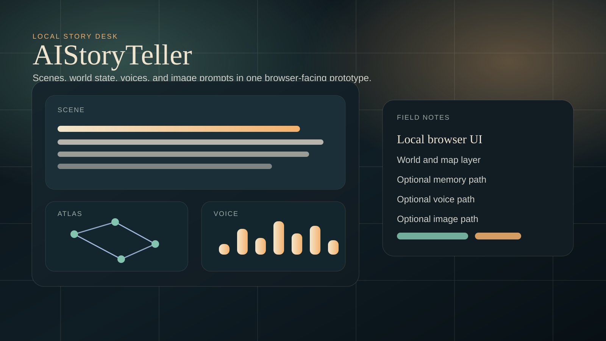
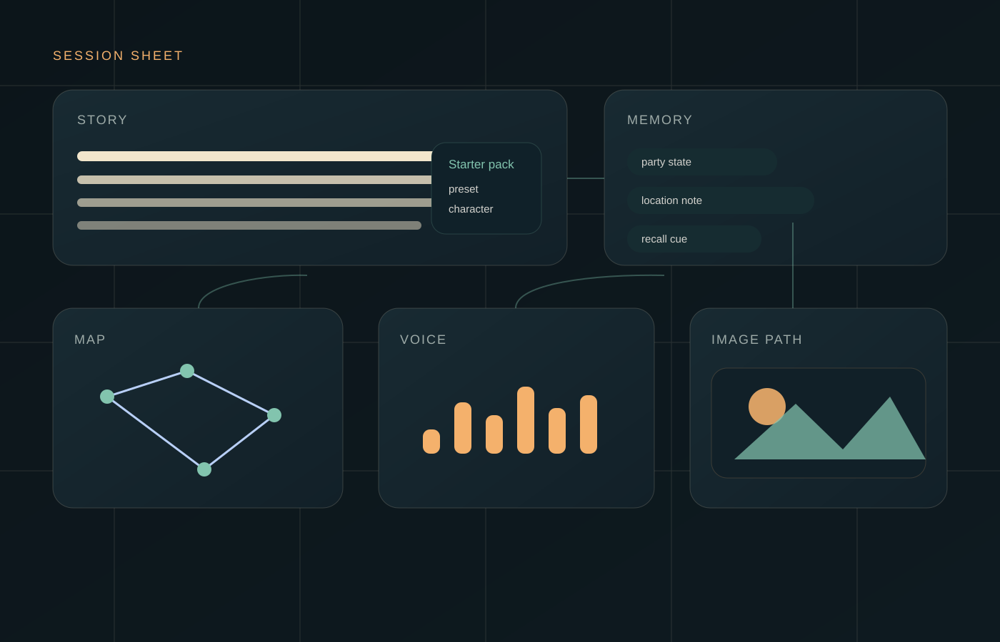

The pressure
Long-form story tools tend to break in the same places. Characters drift. Location state disappears. Voice, imagery, and continuity get pushed into side tools. AIStoryTeller reads like an attempt to keep those pieces in one room.
Experimental prototype page
AIStoryTeller is a browser-facing prototype for local story generation. The repo shows a system built to keep scenes, locations, presets, optional memory, optional voice, and optional image prompting close to the same writing surface.
Why it exists
Long-form story tools tend to break in the same places. Characters drift. Location state disappears. Voice, imagery, and continuity get pushed into side tools. AIStoryTeller reads like an attempt to keep those pieces in one room.
The repo documents a local browser UI backed by a Python server, with presets, starter content, map and world tools, and optional memory, voice, and image branches. The point is not to look finished. The point is to keep the session legible.
README setup notes, public docs, and visible commit history all support the same basic story: this is a local-first experimental web app for storytelling, with an unusually broad surface for a single repo. No private logs or hidden internals are needed to say that plainly.
Working parts
The documented entry is a local server with a browser UI, which makes writing the center of gravity.
World and map modules, presets, and starter data suggest the app wants continuity to survive across scenes.
Infinite Memory Engine docs, configs, diagnostics, and helper model notes show a continuity-focused branch for longer sessions.
TTS defaults, voice tools, cache handling, samples, and benchmarks are all documented in the repo.
Prompt guidance, model registries, and optional Stable Diffusion support let the story workflow branch into visuals without leaving the project.
Session flow
Use starter packs or presets so the session begins with some structure instead of an empty box.
The browser stays the visible writing surface even though the heavy lifting happens locally.
World, map, session, and optional memory systems all try to keep the session from collapsing into loose prose.
When needed, the same prototype can add a narrated layer or image prompting instead of asking for a separate app.
Visual field sheet


Reality check
Active prototype
The clearest public-safe reading is a live experiment under active iteration. The latest visible commit focuses on optimization rather than launch packaging, which fits that description.
FAQ
Safest answer: a local-first experimental web app. It serves a browser UI from a local Python runtime and branches into world tools, optional memory, TTS, and image work.
The repo leans tool-first in its implementation and game-adjacent in its subject matter. Public-facing, the most honest label is a storytelling web app with prototype energy.
Because the repo does not support that claim. The stronger move is to show the product world clearly, keep the wording tight, and let the documented surfaces speak for themselves.
This export package does not have a clean public screenshot set to use safely. It uses original diagrams instead of pretending otherwise.
A public-safe browser screenshot, a polished support URL, a polished privacy URL, and a confirmed external project link would make the central-site import stronger.
Final note
AIStoryTeller is most convincing when it stays specific: local browser UI, story-first workflow, structured state, optional branches for memory, voice, and images. That is already enough to make it interesting.